Продают только товарные сообщества
Товарные и смешанные — 42% выборки (4 158), но 99% заказов и 98% GMV. Услужные и сообщества без каталога почти не пользуются чекаутом, поэтому дальше анализ идёт по 4 158 товарным.
Что просят организаторы, что показывают данные за сентябрь 2026 и какие выводы из этого можно нести в стратегию. Все цифры воспроизводятся в Colab-ноутбуке.
Большую часть PDF занимает история стажёрки Киры в первый день в департаменте стратегии VK. Если убрать сюжет, в диалогах зашиты такие вводные:
PDF, ровно 8 слайдов, приложений сколько угодно. Имя файла: команда_strategy_msk/spb.
Сдача до 22 ноября, 09:00, одна заявка от команды. Q&A 16 ноября в 17:30. Финал 5 декабря.
Широта и глубина анализа, единая логика, соответствие задаче, анализ датасета, качество слайдов.
Можно, но нужно раскрыть инструменты и задачи. Без раскрытия работа не может победить.
Семь листов делятся на две несвязанные части. Лист «Бизнесы» — 9 754 сообщества, по строке на каждое: тип, тематика, контент, подключённые инструменты, заказы через чекаут, реклама. Остальные шесть листов — агрегаты Маркета ВКонтакте и Партнёра (условного внешнего маркетплейса): воронка, дни, источники трафика, категории, пол и возраст, регионы. Общего ключа нет, поэтому заказы Маркета нельзя привязать к конкретным сообществам.
Ноутбук идёт сверху вниз: качество данных → структура бизнесов → воронка инструментов → что связано с заказами → сегментация → Маркет против Партнёра → автоматические сверки → выводы. Каждый график подписан выводом в заголовке, поэтому их можно сразу забирать в приложения.
Товарные и смешанные — 42% выборки (4 158), но 99% заказов и 98% GMV. Услужные и сообщества без каталога почти не пользуются чекаутом, поэтому дальше анализ идёт по 4 158 товарным.
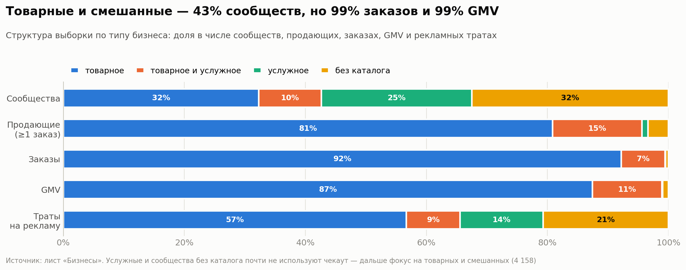
Как читать признаки. «Подключён чекаут» значит, что сообщество принимает заказы внутри VK: корзина и оформление, как в определении брифа. «Подключена оплата» и «Подключена доставка» — это, судя по данным, онлайн-оплата и интеграция со службой доставки. Заказ оформляется и без них: оплату и отправку продавец согласует с покупателем вручную, обычно в сообщениях. Это видно в самих данных: у сообществ без онлайн-оплаты и доставки за месяц 1 791 заказ, а на уровне Маркета внутри VK оплачено 1,2% заказов. Определение полей стоит подтвердить на Q&A.
Заказы в VK принимают 87,5% товарных сообществ, а онлайн-оплату или доставку подключили 19,8%. С ними доля продающих 16,1% против 5,2%, разница в 3,1 раза. Это описательная связь: интеграции мог подключить тот, у кого уже идут продажи.
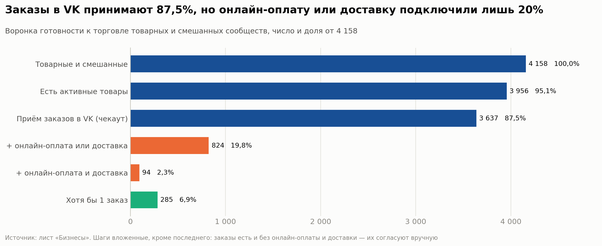
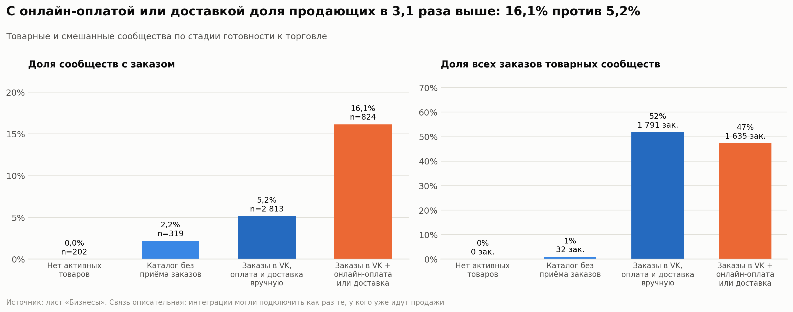
Подключают крупные продавцы: при каталоге 100+ товаров — 53%, при 1–5 товарах — 9%. Цена товара роли не играет (21–24% во всех квинтилях). Онлайн-оплата — самое слабое звено: 5,5% против ~20% у доставки. Те, кто уже продаёт без интеграций, продают не меньше (в среднем 12 заказов в месяц, как и с интеграциями): для них ручная договорённость работает.
Прямой причины в данных нет. Три объяснения для проверки интервью и прохождением настройки: продавцу при малом числе заказов это не нужно; подключение сложное или требует условий (статус, договоры, габариты, касса); продавец не видит выгоды, потому что инструменты не связаны в один путь. Скорее всего, работают все три в разной мере.
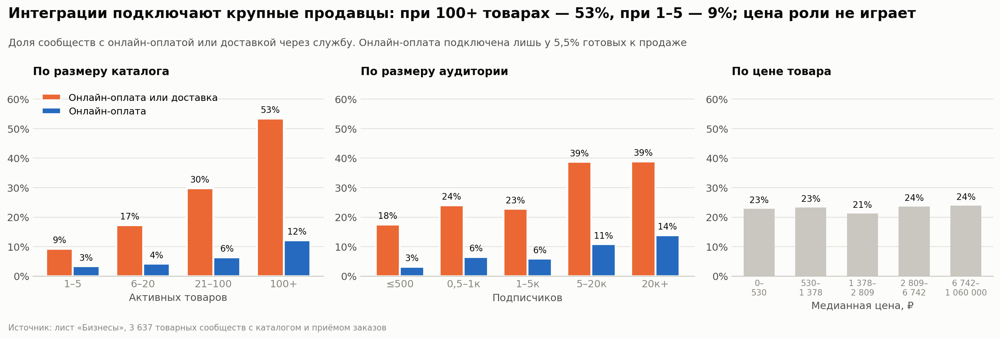
У 298 продающих сообществ топ-10 дают 54% заказов и 42% GMV. Медианный продавец получает 2 заказа в месяц, 128 сообществ — ровно один. Цель «больше продающих бизнесов» требует работы с длинным хвостом, а средние по выборке надо читать с этой поправкой.
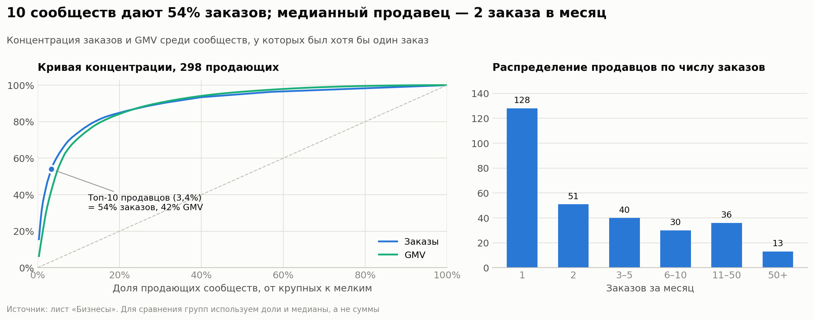
Среди готовых к продаже (активный каталог и приём заказов в VK) доля с заказом растёт с 3% при аудитории до 500 подписчиков до 44% при 20 тыс.+. У публикующих 11+ товарных постов и клипов — 46% против 7%. Товарный контент при этом публикуют лишь 6% готовых сообществ.
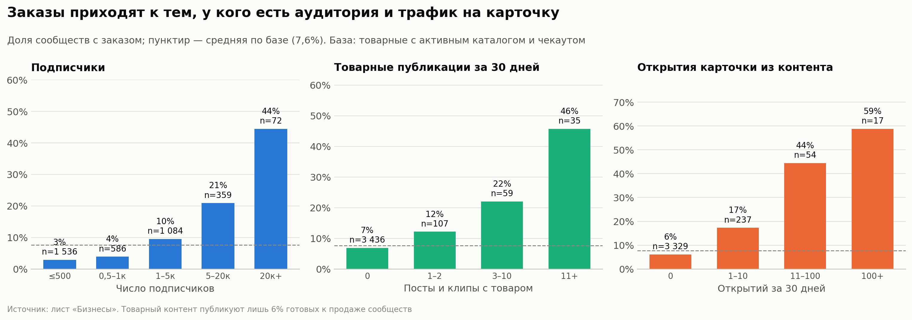
У 299 сообществ с обоими видами публикаций товарные посты набирают не меньше просмотров (медианное отношение 1,9), но лайкают их почти вдвое реже: 0,83% против 1,42%. До карточки доходят около 3 из 1 000 просмотров. Узкое место в превращении просмотра в действие, а не в охвате.
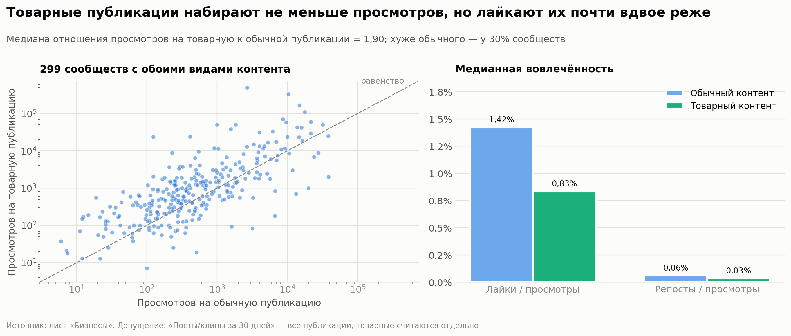
Сегментация по главному барьеру: 2 526 сообществ принимают заказы в VK, но не подключили ни онлайн-оплату, ни доставку, не получили ни одного открытия карточки из контента, и у них ноль заказов. Ещё 600 подключили интеграции, но без трафика. Это самый большой резерв роста числа продающих бизнесов. Продажи растут по обеим осям сразу: с онлайн-оплатой или доставкой и 11+ открытиями карточки заказ есть у 53%.
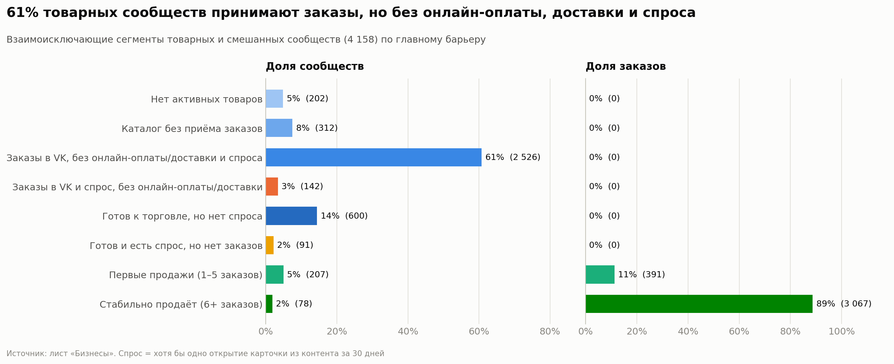
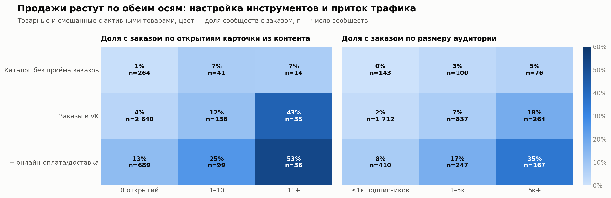
Карточку у Маркета открывают чаще, чем у Партнёра (4,05% против 1,52% показов), но от открытия до заказа доходят 0,21% против 5,67%, в 27 раз реже. Из 413 740 заказов Маркета внутри VK оплачено 4 903, то есть 1,2%. Сделка фактически уходит в переписку или офлайн, а цель кейса — заказы внутри VK.
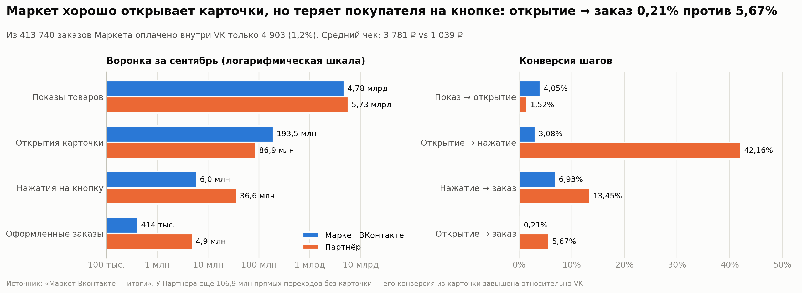
Главная страница Маркета даёт 0,2% открытий карточки. Витрины сообществ дают 39%, лента и клипы около 19%, «Другое» 40% (не расшифровано). У Партнёра 95% открытий идут из реферальных постов и клипов авторов. Вывод для роли Маркета: это инфраструктура карточки и оформления заказа для витрин сообществ и контента, а не самостоятельная витрина.
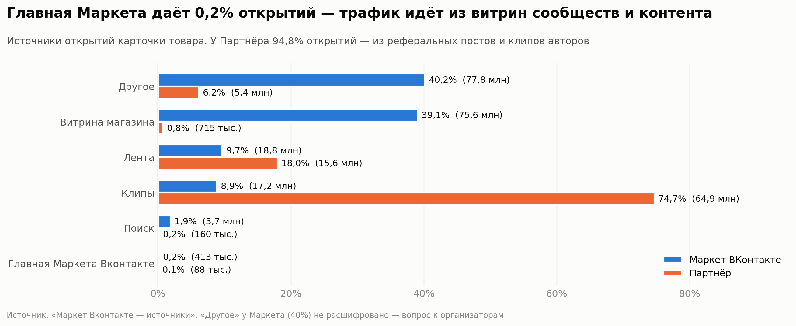
«Продукты питания» и «Хобби» — 70% заказов Маркета по категорийному срезу. Конверсия Партнёра выше примерно в 26 раз по медиане категорий. Покупатель Маркета моложе: 25–34 лет — 28% против 17% у Партнёра, а у Партнёра больше покупателей 45+. Около трёх четвертей покупателей обеих площадок — женщины.
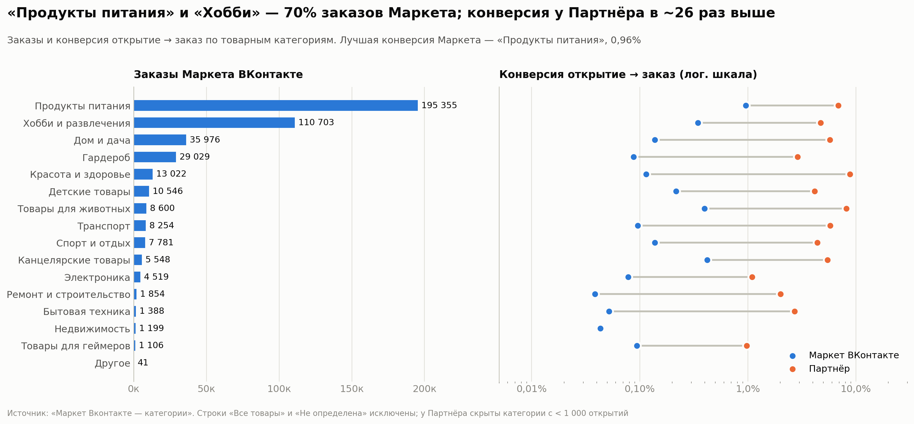
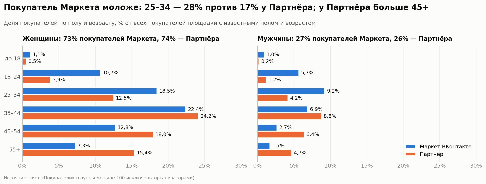
Бриф предупреждает, что часть данных искажена. Ноутбук автоматически сверяет срезы. Расхождения ниже стоит вынести в вопросы на Q&A и в оговорки на слайдах.
| Проверка | Результат | Что делать |
|---|---|---|
| Суммы по дням = месячные итоги | сходится | Динамике можно доверять |
| Заказы Маркета по категориям = итог | +21 545 | Категории для структуры, не для абсолютов |
| Заказы Партнёра по категориям = итог | −370 008 | То же; вероятно, прямые переходы без карточки |
| Реферальные открытия Партнёра ≤ лента + клипы | 82,3 млн > 80,5 млн | Запросить определение вложенной строки |
| Демография и регионы = контрольные строки итогов | сходится | Группы меньше 100 исключены организаторами |
| Заказы при выключенном приёме заказов (чекауте) | 14 строк | Признаки на дату выгрузки; проверять выводы с ними и без |
| Товарных постов больше всех постов | 11 строк | Уточнить знаменатель доли товарных постов |
Целевой сегмент для пилота: товарные сообщества, которые принимают заказы в VK, но без онлайн-оплаты и доставки и без трафика на карточку. Их около 2,5 тыс. в выборке, у них ноль заказов, а барьер измерим.
Механика: сделать онлайн-оплату и доставку простыми для малого продавца и показать их выгоду, затем дать первый трафик через товарный контент и авторов. Данные показывают, что обе оси нужны одновременно.
Роль Маркета: не отдельная витрина, а общая инфраструктура карточки, оформления заказа и онлайн-оплаты для витрин сообществ, ленты и клипов. Ключевая метрика — доля заказов, оплаченных внутри VK (сейчас 1,2%).
Ограничения: данные синтетические, за один месяц, связи описательные. Причинный эффект проверяется пилотом с контрольной группой.